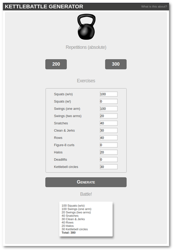

Überarbeitete Oberfläche in Glade 3.22
Im Zuge der Veröffentlichung von GNOME 3.28 wurde auch Glade eine ordentliche Portion Zuwendung zuteil.
Headerbar
Das in GNOME 3.10 (Veröffentlichung 2013) eingeführte Headerbar-Widget ließ sich selbst bereits in Glade verwenden, die Anwendung selbst nutzte sie bisher nicht. Sie vereint Titelleiste, Menü, Toolbar und die Projekt-Tableiste. Durch diese Komprimierung wird viel leerer Raum eingespart (siehe Screenshots).
Arbeitsfläche
Die Dreiteilung der Oberfläche ist erhalten geblieben, es gibt aber zwei wesentliche Änderungen:
- Die Widgetauswahl erfolgt nicht mehr aus der linken Spalte, sondern sie ist oben auf der mittleren Arbeitsfläche als Buttonleiste mit Dropdown-Menü erreichbar.
- In der nun freien Spalte werden die Widgetstruktur des aktuellen Projekts angezeigt. Diese war zuvor in der oberen Hälfte der rechten Spalte zu finden.
Die Verlagerung der Widgetauswahl ermöglicht eine komplette Nutzung des vertikalen Platzes für die Anzeige der Struktur auf der linken sowie deren Eigenschaften auf der rechten Seite.
Tour
Beim ersten Aufrug der neuen Version startet ein Assistent, der etwas aufdringlich die Neuerungen anpreist. Dieser kann jederzeit über die Einstellungen in der Headerbar unter "Einführung in interaktive Benutzeroberflächen" erneut aufgerufen werden.

Tour-Wizard
Screenshots

Glade 3.22

Glade 3.20
Nikola: everything zen
[UPDATE] Artikel wurde aktualisiert, keine manuelle Installation mehr notwendig
Aktualisiertes zen-Thema für Nikola
Ein Nachteil von Nikola ist meiner Meinung nach die stiefmütterliche Behandlung der Themes. Das von mir genutzte zen-Thema hatte ich bereits vor einiger Zeit auf Font Awesome 4-Icons geupdated und hier als Archiv zum Download bereitgestellt.
Inzwischen gibt es nicht nur Version 5 von Font Awesome, sondern auch einen Fork des Projektes namens Fork Awesome mit ein paar neuen Icons.
Dank eines Kommentars einer der Nikola-Devs (thx Roberto) hier habe ich mich nun durchgerungen, meine Änderungen offiziell per Pull Request einzureichen. Die zen-Familie ist nun auch im offiziellen Repository auf Font Awesome v4.7.0 geupdatet. Außerdem gibt es eine neue Variante, die die Fork Awesome-Icons nutzt. Eine manuelle Installation erübrigt sich also, sie kann direkt im Nikola-Projektordner erfolgen:
$ nikola theme -i zen-forkawesome
Anschließend muss das Thema nur noch in der conf.py aktiviert werden:
THEME = "zen-forkawesome"
Desweiteren werden die Icons nun mit "fa fa-iconname" angesprochen statt zuvor mit "icon-iconname". Dies ist auch in conf.py.sample vermerkt und wird bei der Installation des Themas angezeigt.
Die Änderungen werden natürlich erst nach dem nächsten nikola build wirksam. Da zen-forkawesome auf zen basiert, wird dieses Thema automatisch mit installiert.
Kivy: Starter-Paket
Kivy ist ein plattformunabhängiges GUI-Toolkit, mit dem man Python-Programme erstellen kann, die auf Linux, Windows, Mac und mobilen Plattformen (iOS, Android) laufen - die reptiloide eierlegende Wollmilchsau sozusagen.
Für mein nächstes kleines Vorhaben werde ich darauf zurückgreifen, deshalb gibt es hier das kleine Link-Starterpaket:
Text
Videos
Empfehlenswert sind auch die folgenden Videoreihen:
Neu: der Kettlebattle-Generator
Der Kettlebattle-Generator - eine kleine Flask-App für die großen Muskelpartien
{kind=link}
Kettle...was?
Genau. Okay, du weißt nicht, was Kettlebattle ist, kein Problem. Die Menschen, die diesem Unsinn nachgehen, dürften sich zahlenmäßig aktuell im einstelligen Bereich bewegen (Stand: Januar 2018).
Kettlebattle ist ein kollaboratives Kettlebell-Home-Workout ab zwei Mitspielern.
Die Frontlinie der "Battle" verläuft dabei nicht zwischen den Mitspielern, sondern zwischen Motivation, Schweinehund, Sofa und Hanteln. Team up!
Spielregeln
- Die Kontaktaufnahme
- Der potentielle Mitspieler wird mit "Kettlebattle?" kontaktiert.
- Der Workout-Vorschlag
- Hat der Mitspieler die Kontaktaufnahme positiv beantwortet, schlägt der Initiator ein Workout vor, das der Mitspieler akzeptieren muss. Fairness geht vor. Wer nach einem langen Tag mitten in der Nacht seinem Mitspieler ein hartes Workout vorschlägt, hat schnell keine Mitspieler mehr.
- Do you even lift?
- Do it.
- Das Finisher-Selfie
- Der krönende Abschluss jeder Kettlebattle ist das Finisher-Foto, das man dem Mitspieler nach dem Workout als Beweis seiner Sportlichkeit zuschickt. Hierbei ist absolute Ernsthaftigkeit zu wahren, es geht hier schließlich um Kettlebattle!
Der Generator
Der Kettlebattle-Generator ist eine Einseiten-Web-App, mit der sich aus einem zuvor definierten Übungspool ein Workout generieren lässt.
Habenwill!
- für die Ausführung wird Flask benötigt
- Download und Entpacken des Quellcodes von GitHub
- kbgen.py ausführen, dies startet den internen Flask-Server
- 127.0.0.1:5000 aufrufen
- Workout generieren
- Werte können per Spinner geändert werden
Konfiguration
In der kbgen.py gibt es 3 Variablen für individuelle Einstellungen:
- `REPS_PRESET`: Tupel mit 2 Werten (int) für die Preset-Buttons, Gesamtwiederholungen
- `KB_EX`: Liste von Übungen, die bei der Kettlebattle zur Auswahl stehen sollen, ein Listeneintrag ist ein Tupel nach dem Muster (Name, Minimum bei Preset 1, Minimum bei Preset 2)
- `MAX_EX`: Maximale Anzahl (int) von Übungen, die aus der Liste durchgeführt werden sollen, Minimumwerte werden immer gezählt
Verweise
- Kettlebell-Image: openclipart.org
- Layout: An Introduction to Python’s Flask Framework
- Kettlebattle ist eine Erfindung von ZeEvilKohl und encarsia (yours truly)
- GitHub-Repository
Pläne für später?
- Export in Textbildchen (leben wir nicht in tollen Zeiten?)
- Favoritenliste/Liste der letzten Kettlebattles
- Lokalisation
Zugegeben, darauf hat die Welt nicht gerade gewartet. Aber nun ist es irgendwie trotzdem da. Willkommen!
Kommentieren auf
Texteditor mit GtkSourceView
Inhalt
Text-Widget mit GtkSourceView
Gtk+ bietet mit Gtk.TextView ein Widget zum Anzeigen und Bearbeiten von Text/-dateien an. Wie beim TreeView-Widget werden die Daten (model) und die Anzeige (view) getrennt voneinander gehandhabt. Das datentragende Modell zu TextView ist TextBuffer.
GtkSourceView ist eine Erweiterung und Unterklasse von TextView, die Syntaxhighlighting, Farbschemata, Laden/Speichern, Vervollständigung und andere Funktionen unterstützt.
Im Beispiel wird ein Editor ergestellt, der bestimmte Dateien laden und speichern kann, sowie eine rudimentäre Suchfunktion und ein Widget zum Farbschemawechseln bereitstellt.

Glade
GtkSourceView
Die SourceView-Widgets befinden sich unterhalb einer eigenen gleichnamigen Hauptkategorie in der Seitenleiste.
- GtkSourceView: das eigentliche Editorwidget, das in einem ScrolledWindow platziert wird
- GtkSourceMap: Miniaturansicht und Unterklasse von SourceView
- GtkSourceStyleSchemeChooserWidget: Widget zur Auswahl eines StyleSchemes
In Glade lassen sich bereits viele Eigenschaften des Editorbereichs festlegen wie die Anzeige der Zeilennummern, Einrückung, Umbruchverhalten usw., die sich natürlich auch über set_property festlegen oder ändern lassen.
Beim StyleChooser-Widget wird das Signal button-release-event belegt, um das ausgewählte StyleScheme auf die SourceView-Widgets anzuwenden.
SourceMap
Das Widget muss mit der anzuzeigenden Quelle, einem SourceView-Widget, verknüpft werden (über "Allgemein > View"). Es wird dann der Inhalt des SourceView-Widgets verkleinert (standardmäßig mit Schriftgröße in 1pt) angezeigt. Durch scrollen in SourceMap verändert man gleichzeitig die Anzeige in SourceView.
Headerbar
Die Headerbar enthält verschiedene Buttons zum Laden, Suchen und Speichern:
- "Python file" und "Glade file" laden die entsprechenden Dateien dieses Beispieles in den Editor (Signal clicked)
- Die Sucheingabe ist ein Gtk.SearchEntry-Widget (Signale search-changed und activate)
- "Save .bak" und "Save" speichern die Dateien (Signal clicked)
Python
SourceView
Initialisierung
Widgets, die nicht zum Gtk-Modul gehören, müssen zunächst als initialisiert werden (siehe auch Vte-Terminal):
GObject.type_register(GtkSource.View)
Das SourceView-Widget besitzt bereits einen integrierten Textbuffer, welcher mit get_buffer abgefragt werden kann:
self.buffer = self.view.get_buffer()
Desweiteren werden noch Objekte zum Laden und Speichern von Dateien sowie fürs Syntaxhighlighting benötigt:
self.sourcefile = GtkSource.File() self.lang_manager = GtkSource.LanguageManager()
Datei laden
Die zu öffnende Datei muss dem GtkSource.File-Objekt im Gio.File-Format und anschließend an GtkSource.FileLoader übergeben werden. Die Information zum Syntaxhighlighting erhält der Buffer:
sourcefile.set_location(Gio.File.new_for_path("file")) buffer.set_language(self.lang_manager.get_language("language")) loader = GtkSource.FileLoader.new(buffer, sourcefile) loader.load_async(0, None, None, None, None, None)
Datei speichern
Analog zum Laden erfolgt das Speichern mit GtkSource.FileSaver. Im Beispiel speichert der "Save"-Button die bestehende Datei (es erfolgt keine "Überschreiben?"-Sicherheitsabfrage) und der "Save .bak"-Button speichert den Inhalt als neue Datei mit genannter Endung ab. Die Übergabe der Dateien erfolgt wie beim Laden Gio.File-formatiert:
#bestehende Datei überschreiben saver = GtkSource.FileSaver.new(buffer, sourcefile) #Datei unter anderem Namen speichern saver = GtkSource.FileSaver.new_with_target(buffer, sourcefile, targetfile) #Speichern ausführen saver.save_async(0, None, None, None, None, None)
Text hervorheben
Zunächst ist festzustellen, dass es sich bei den Funktionen suchen(/ersetzen)/markieren und Texthervorhebungen um zwei getrennt voneinander auszuführenden Mechanismen handelt, für die GtkSource.Settings eingerichtet werden müssen:
settings = GtkSource.SearchSettings() search_context = GtkSource.SearchContext.new(buffer, settings)
Alle Vorkommen eines Strings im TextView lassen sich auf zwei Arten visualisieren, einer naheliegenden und einer eleganten.
Die naheliegende Lösung ist die Ausführung von settings.get_search_text bei der Eingabe von Text in das Suchfeld (Signal search-changed):
Die andere Möglichkeit, bei der kein Signal benötigt wird, ist die direkte Anbindung der SearchSettings-Eigenschaft "search-text" an das Sucheingabefeld:
builder.get_object("search_entry").bind_property('text', settings, 'search-text')
Text markieren
GtkSource.SearchContext wird für die Suchen-/Ersetzen-Funktion innerhalb eines GtkSource.Buffer verwendet. Dieser wurde bereits mit den SearchSettings initialisiert.
Die Markierungsfunktionen und Cursorplatzierung erbt GtkSource.Buffer von Gtk.TextBuffer, die Suche wird mit SeachContexts forward2 ausgeführt.
def find_text(self, start_offset=1): buf = self.buffer insert = buf.get_iter_at_mark(buf.get_insert()) start, end = buf.get_bounds() insert.forward_chars(start_offset) match, start_iter, end_iter, wrapped = self.search_context.forward2(insert) if match: buf.place_cursor(start_iter) buf.move_mark(buf.get_selection_bound(), end_iter) self.view.scroll_to_mark(buf.get_insert(), 0.25, True, 0.5, 0.5) return True else: buf.place_cursor(buf.get_iter_at_mark(buf.get_insert()))
Durch die Signalbindung von activate im Suchfeld wird die Suche durch Drücken der Eingabetaste an der letzten Position fortgeführt. Für eine Rückwärtssuche muss analog zu forward2 oder forward_async backward2 oder backward_async verwendet werden.
StyleChooser
Das Widget zeigt die verfügbaren Stile an. Es ist nicht möglich, lokale Stile anzugeben oder sie zu verändern.
Der angewählte Style lässt sich dann einfach auf den gewünschten Buffer anwenden:
def on_signal_emitted(self, widget, event): buffer.set_style_scheme(widget.get_style_scheme())